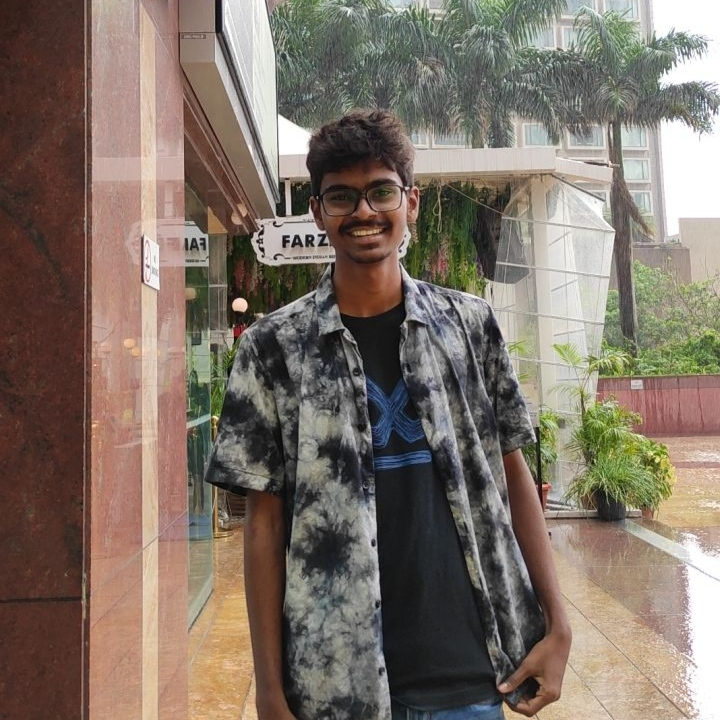

WELCOME
It’s my pleasure to introduce myself as Vineeth Varma. I was born in
Vishakapatnam and raised in Hyderabad, Telangana. I went to Sri
Chaitanya School for my education and am presently pursuing my B.Tech at
IARE. My strength is my willingness to take on new challenges and strive
for perfection. This is because I believe that learning from our
successes and failures is the most effective way to shape ourselves in
order to achieve our objectives. And I believe in myself and my efforts,
and I seek fulfillment in all aspects of my life. My short-term goal is
to excel at the skills I’m learning, take on a challenge in some
outstanding businesses, and climb the way up.